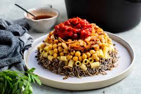

My Favorite food in Egypt.
Koshary.
Koshary, kushari or koshari (Egyptian Arabic: كشرى [ˈkoʃæɾi]) is Egypt's national dish and a widely popular street food. [1] It is a traditional Egyptian staple, mixing pasta, Egyptian fried rice, vermicelli and brown lentils,[2][3] and topped with chickpeas, a garlicky tomato sauce, garlic vinegar, and crispy fried onions. Sprinklings of garlic vinegar and hot sauce are optional.
Fool Wa Taameya
Egyptian cuisine makes heavy use of poultry, legumes, vegetables and fruit from Egypt's rich Nile Valley and Delta. Examples of Egyptian dishes include rice-stuffed vegetables and grape leaves